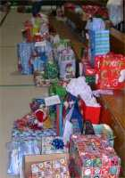
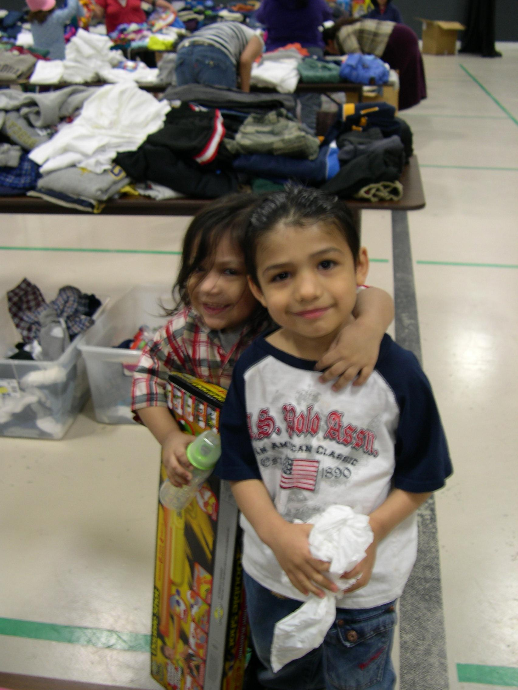

|  | Needs |  |
Listed below are common and ongoing needs of Jericho Road Ministries to be able to continue offering the services it does. To volunteer or donate materials please visit the Become A Partner page.
| Events Volunteer Work | ||
|---|---|---|
| Event volunteer needs will be listed on the events page | ||
| Material Needs | ||
| Non perishable foods | Pots and pans | Children's clothing sizes 4-16 |
| Personal hygiene items | Dishes | Gift cards to Walmart or Fred Meyers |
| Bright white 24lb. paper | Cooking utensils | White legal size paper |
| Green 20lb. paper | Pink 20lb. paper | Quilts, blankets, afghans |
| Toys for Christmas | Backpacks | School supplies |
| General Volunteer Work | ||
| Audio production | Video production | Online auction coordinator |
| Pick up and sort donations every Tuesday and Friday | ||